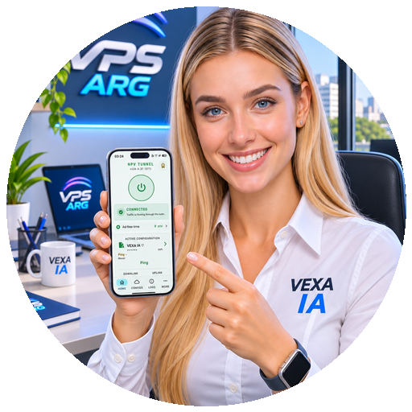

SS Premium
Compatible con Personal y Claro. Un mismo método para ambas compañías.
Ver servicioTe presentamos nuestros servicios, las opciones disponibles y cómo comenzar.
VEXA te acompaña y te orienta para conocer los servicios de VPS ARG.
Conocer los serviciosVPS ARG nació en Latinoamérica para resolver un problema real: seguir conectado cuando más lo necesitás.
Nuestra propuesta combina conectividad privada, herramientas VPN, procesos de activación ágiles y acompañamiento humano. Trabajamos para acercar alternativas para distintos dispositivos y necesidades.
Usuarios que forman parte de nuestra comunidad, según la información institucional publicada por VPS ARG.
 TECNOLOGÍA · CONECTIVIDAD · ACOMPAÑAMIENTOUna experiencia digital pensada para vos.
TECNOLOGÍA · CONECTIVIDAD · ACOMPAÑAMIENTOUna experiencia digital pensada para vos.Conocé nuestras alternativas para Android, iPhone, TV y PC. Cada servicio cuenta con características específicas.
Compatible con Personal y Claro. Un mismo método para ambas compañías.
Ver servicio
Alternativa Personal orientada a juegos online y entretenimiento.
Ver servicioServicio con configuración y asistencia para dispositivos Apple.
Ver servicio
Servicio NETV para una conexión de TV.
Conocer másServicio NETV con dos conexiones, para combinar celular y TV.
Conocer másProbá el servicio, recibí ayuda o conocé nuestro programa para revendedores.
Tutoriales de mantenimiento, configuraciones, conexiones y una clase pública del Curso de Administrador de Redes VPN.

APRENDÉ CON VEXAProcesos de alta pensados para ser ágiles.
Soluciones de conectividad con herramientas VPN.
Gestión de pagos mediante Mercado Pago.
Canal de soporte y orientación por WhatsApp.
Conocé los servicios disponibles y elegí el que necesitás.
Indicá la información necesaria para el alta.
Continuá mediante el proceso seguro de Mercado Pago.
Recibí tus datos y seguí las instrucciones de instalación.